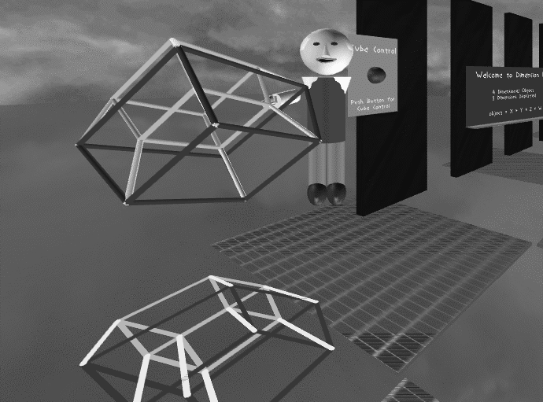
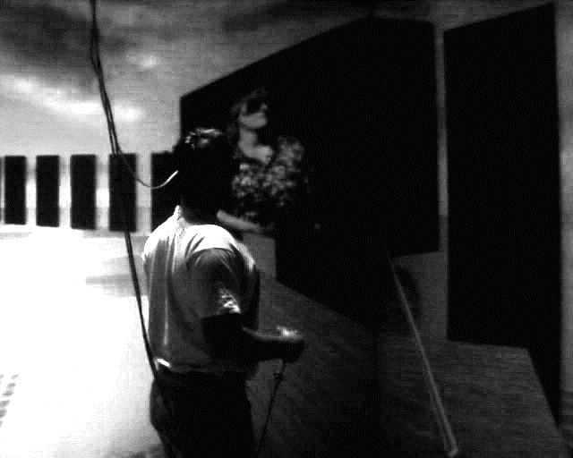
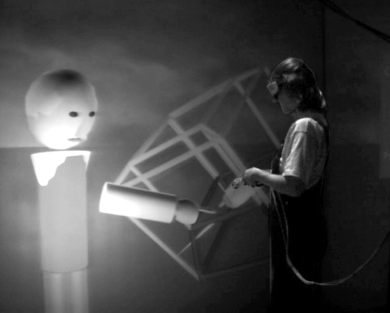
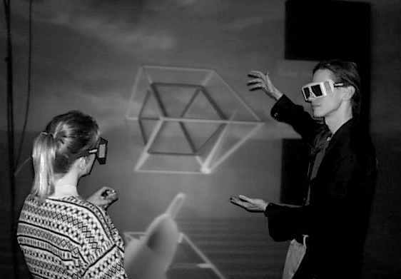

|
Comparison of Remote User Representation in
a Collaborative Virtual Learning Environment
James T. Costigan
costigan@evl.uic.edu
Andrew E. Johnson
aej@evl.uic.edu
Steve Jones
sjones@uic.edu
Electronic Visualization Laboratory
University of Illinois at Chicago
ABSTRACT
Three different representations for users in an immersive collaborative virtual learning environment are compared: A remote instructor appearing via a video window, and a remote instructor sharing the virtual space via a computer generated avatar body, are compared against an instructor sharing the local virtual space with the student. The study found significant similarities between the avatar and in-person conditions, putting into question the need for video representations in collaborative virtual environments.
The representation of a person in a networked virtual environment can and does vary from application to application. These variations affect the appearance and the level of interactivity that the user has with the remote user and the environment. Different representations have inherent limitations in transmission of persona and the representation of the users in a remote environment.
Research has been done that focused on the importance of technological characteristics regards text-based computer-mediated communication (CMC) (Kiesler, Siegel, & McGuire, 1984; Sproull, & Kiesler, 1986), but few have engaged in research into non-textual characteristics as lacking in social context cues-verbal and nonverbal information-that are presumed essential to interpersonal exchange Social presence and media richness theories also assume that a lack of social context cues makes CMC ill-suited to interpersonal interaction (Culnan and Markus, 1987). As Jones and Kucker (forthcoming) noted:
These perspectives assume that the number of channels available for the transmission of impression-bearing data, and specifically nonverbal cues, mark the critical difference between CMC and face-to-face (F2F) communication. While F2F is regarded as a richer form of communication because it proves an essential blend of verbal and nonverbal cues for social interaction, CMC is diagnosed as utilizing fewer channels, and thereby as "bereft of [the] impression bearing data" that makes for effective interpersonal communication (Walther, 1993, p. 384).
In networked virtual environments there are serious implications on the level of hardware, networking bandwidth and user skill needed to effectively use the various types of networked presences and share "impression bearing data." These variations in design and use affect the environment and the users. In this paper we examine the effects that different user representations have on inexperienced users and how their perception of the environment and the remote users changes with variation in their representation, to see what, if any, change in interaction and attention happens when representation changes. We also wanted to discover the significant advantages and disadvantages of different forms of representation and what commonalties they share. These representations were explored using two networked CAVEs (Cruz-Neira, Sandin, and DeFanti, 1993) to produce fully immersive environments for both users.
Networked representation in spatially immersive displays (SID) has taken on a number of different forms, but can be generalized into two basic constructs. The first, and perhaps the most popular is video. Video teleconferencing is widely used and the relationship between video and virtual environments is the subject of much effort and research ((Fuchs, et al, 1994; Johnson, Leigh and Costigan, 1998). The second construct is that of an avatar, a networked puppet that has the same movements and relative position as the remote user. Both of these representations have been the subjects of experimentation, and crossover. Recent advances in the streaming of video over regular and high-speed networks have brought about an increased attention to video over networks. These advances allow near full frame-rates at lower resolutions or full resolution at lower frame rates. Advances in avatars have allowed multiple users to share the same virtual environment. In this experiment we compared three ways for an instructor to teach a concept to a student within a virtual environment: using two-way video and audio between two remote sites, using avatars and two-way audio between two remote sites, and teaching in-person.
DESIGN
Educational Model
To evaluate the different representations we needed a premise for the environment. The representation of mathematical dimensions in virtual realty is relatively easy to do and provides a number of interesting objects and movements, which would be difficult to convey through more traditional teaching methods. The concept of mathematical dimensions is also relatively unfamiliar to our testing population of college sophomores majoring in the social sciences. The students do not have prior experience of being taught this concept, so the evaluation of the effectiveness of the overall environment could be better judged. An instructor described mathematical dimensions from zero to four, using a cube model that cast a shadow on the floor. The shadow showed the representation of higher dimensions in lower dimensions. The model was able to rotate in all four dimensions and could also be manipulated by either the student or the instructor, to allow the student to better understand the movement. The educational design also allowed a "classroom" in the virtual environment to help inexperienced users have a concrete and familiar atmosphere to interact in. See Figure 1.

Figure 1: The virtual learning environment with the avatar of the remote instructor pointing out a feature on the hypercube.
Pre Test Experience
All virtual environments incorporate some learned behaviors and styles of interaction. In the CAVE virtual environment we use a "wand" device to control movement in the environment and for interaction. The wand is a six degree of freedom tracked hand-held device with three buttons and a joystick.
While similar to a video-game controller, the tracked nature of the device was new to our users A number of experiments in virtual environments have spent a great deal of time with the users trying to figure out how to interact and the novelty effects of virtual environments (Dede, Salzman, and Loftin, 1996; Roussos, et al, 1997). All of the subjects in this experiment were first allowed to experience the CAVE using a different environment than the experimental one. This session allowed the users to familiarize themselves with the VR hardware and navigation interface. Each was allowed to interact directly with the environment and ask any questions that they may have had about the environment or how it worked. In this environment all of the users had the opportunity tonavigate using the wand, and to physically move within the CAVE relative to the virtual environment. Users were also able to interact with objects in the environment. No time limits were placed on this initial interaction, and the users were encouraged to explore and enjoy themselves. This initial session was not networked and there was no interaction with remote users.
Prior to the experiment a survey was given to see if there were any peculiarities with a subject that may skew the interaction or the results. Questions were designed to see if they had previous CAVE experience, a math background, or an inclination toward science fiction. Several questions were designed to eliminate subjects who had CAVE experience, or who had personal experiences with any of the researchers or the instructor.
Observation
The instructor for all sessions was experienced in networked collaborative virtual environments. During all sessions an observer, also experienced in networked VR, would take notes from an unobtrusive position in the student's CAVE. Videotapes were also made of the interaction between the students and the instructor. These two perspectives were compared between each session and the videotapes were reviewed at the end of the experiment.
Post Test/Interview
Immediately after each session the student was taken to a holding room and debriefed. These sessions were video taped for accuracy and to capture any nonverbal explanations. Virtual environments do not have a vocabulary that is appropriate to the way that interaction, especially networked interaction, happens. Because of this, the idea to videotape seemed appropriate. The questions explored two general areas; the first had to do with the topics covered in the educational package, namely mathematical dimensions. Questions included; what isa dimension and how can you tell one dimension from another? Questions requiring extensions of the information covered included questions such as: If an object has five dimensions, what would it look like and how might it move? The second set of questions had to do with the user’s perceptions of the environment and the instructor. Using short answers and ranking using five point Likert scales, these questions included; how would you rate the interaction between you and the instructor, did you enjoy the environment, what about it did you like, how knowledgeable would you rate the instructor?
DEVELOPMENT
Many of the interesting findings in this experiment came not in the experiment itself, but in the development of the techniques and environments. This section will also explain how the environment is designed and why it was designed as it was.
It was a goal of the research to have all information go over a single networked connection. This would allow evaluation of the differences in bandwidth required. Early testing using the NICE environment (Roussos, et al, 1999) used the VAT networked audio tool (Roussos, et al, 1997). Although the quality of audio was useable, the time delays and lack of fully duplexed audio created substantial breakdowns in the interaction. This variable delay caused the users to use louder tones of voice and to repeat themselves, thinking that the first statement may not have been heard. It was clear that for the interaction to be a true test of the way a person was represented, the audio needed to be in real time. Any other audio condition would create such significant challenges that the environment would be unusable. The use of real time audio also allowed face-to-face communication as one of the testing conditions, without having the results simply focusing on the importance of audio. This initial testing was proof enough that real-time audio is essential for telepresence. A wired solution was used to allow the best audio connections possible. The two CAVEs used in this experiment are located in separate buildings about 3000 feet apart on the University of Illinois at Chicago campus. In other experiments (Johnson, Leigh and Costigan, 1998) telephone lines have been used effectively for as many as 16 users in the same environment.
How to adequately pick up audio also became an issue. The more equipment that the user has to wear the more the user is likely to be distracted from the environment itself. The entire concept of a SID is to allow the user a freedom from equipment that head mounted display (HMD) or booms do not allow. The instructor was equipped with a wireless head worn microphone that allowed for excellent reproduction of his voice in the remote environment with a minimum of distraction. For the student, an ambient microphone system was designed. The user had no direct knowledge of how the audio was getting to the instructor. The system design also had to have enough fidelity to allow the instructor to hear all paralinguistic cues given by the student (50Hz to 18kHz at 30 degrees incidence; sensitivity 22mV/Pa.) The subtlety of a student's voice, phrases, pauses and non -word sounds are important for the instructor to gain an appreciation of the student's level of understanding. The design of the audio system is significant to the effectiveness of the environment.
Design of the video version of the environment proved challenging. These design issues are significant in the overall effectiveness of the environment and have a direct effect on the results. Obtaining that video was significantly more challenging. The CAVE uses video projectors capable of producing approximately 225 ANSI lumens at full white. Video equipment requires much higher lighting to produce color images of teleconference quality. The addition of extra lighting equipment was experimented with, but caused the projected screens to be washed out. A specialized camera was installed that allowed for extremely low light pick up (15lux; F1.4 Gain: 18db) and the ability to use frame integration (variable 255 to 1; 3 frame used). This frame integration allowed the light from two fields to be summed for each frame. This produced some blurring during fast movement, but the nature and size of the CAVE, along with the design of the experiment, made this blurring less significant. The video transmission between the two CAVEs was real-time at 640 X 480 at 30 frames a second using a Light Wave fiber optic network.

Figure 2: A student in the CAVE interacts with the remote instructor shown in a video window attached to the environment
In order for the image to display the facial gestures that are touted as the reason to use video
(Kim and Biocca, 1997; Tang and Isaacs, 1992) the camera must be positioned directly in front of the user. This position causes an intrusion into the virtual environment that was deemed unacceptable. The CAVE is also a fairly large space (10’ X 10’) so where the user might move, and which direction they might face, calls for an almost impossible number of cameras and camera positions (Fuchs, et al, 1994). Use of a tracked camera platform was considered but no suitable units could be procured prior to the experiment. The decision was made to place the camera in a front corner of the CAVE just above eye level on the same wall that the video is displayed. This is the classic design used in most teleconferencing systems. When the local user looks into the camera, he or she is looking at the video of the remote user.
Video was placed on a polygon and appeared about 3’ X 4’ in the virtual environment. This polygon could be placed in the virtual environment, in which case as the user moved the video moved. This is not ideal for inexperienced users in that they can move the video to a position in which it is no longer visible to them. They also have the ability to move the video to a position different than the camera, in which case looking at the video would cause the remote user to see the back of a user's head. The other option is to place the video with relation to the physical environment, on one of the walls of the CAVE. This causes significant problems in that it is not part of the virtual environment that the user is supposed to be immersed in, and does not pay attention to objects that are in the environment. When the video screen was attached to the physical space the hypercube model used in the educational section was hard to view. For this reason, the decision was made to attach the screen to the virtual environment and have the instructor position the user so that both the screen and the cube would be in view.
In initial testing of this video-based environment there were no immersive cues as to either user's position, as the visual communication relied totally on video. This design proved impossible, as the instructor would become frustrated trying to point out significant things, with no ability to point in the remote environment. A simple pointer was added to allow the instructor or student to point in the remote space. This pointer was drawn off the wand but no "humanoid" forms were represented from the pointer position. The design is similar to those used in teleconferencing systems with shared white boards. (See Figure 2.)
Avatars
The avatars in this system resemble Fisher-Price toys and only approximate the human form. Movement was directly related to the tracked head and hand movement of the remote user, allowing the avatar to gesture using those two tracked points. This avatar system was designed using Inventor models in Performer running over the CAVE Library. See Figure 3.

Figure 3: A student in the CAVE interacts with the remote instructor represented by a computer generated avatar body
The use of inventor models made the modeling very easy to do, but caused variations in accuracy in the exact match between the physical and the virtual. It is extremely important that the shared environment is exactly matched between the two users. If a person is pointing at a minute detail it is important that the remote representation be finite enough to discern that level of minutia. These differences are apparent to users when they need to verbally clarify what they are pointing at. This was one of the things all users did when they were introduced to the environment. They would point at an object in the environment and ask, "Do you see what I ampointing at?" or attempt some other test of the environment. If the answer was correct, they would assume that the physical interface was correct. The accuracy of translation from the physical to the remote (virtual) representation seems an appropriate way to judge the overall value of the visual system.
A moving mouth was added to the avatars. The mouth opened and closed based on amplitude and paid no attention to the types of words, or the mouth shapes that would make those words. The effect is similar to an over-dubbed foreign film. These moving mouths added realism to the avatar. Audio reproduction in the local CAVE was non-directional but the moving mouth assists the user in locating the sound.
It was determined early on that the weak link in this system was the tracking system (known as "Flock of Birds") which had some level of noise and fluctuation when used real time. To provide the local user with a representation of what the remote user sees a virtual hand and extended pointer were added to the local virtual world. That is, the user could see a computer-generated hand where the remote user believed their hand was. This allows the local user to map the physical space to the virtual. The extended pointer allows the user to relate their relative position to objects in the environment. It is also essential that the movements be as close to real time as possible. The variation of movement with verbal comments can have a great deal of effect on meaning.
In-Person
The in-person environment caused very few technical problems since audio, remote video and avatars were not involved. It was decided that the student should wear the tracked glasses, since the movement of the hypercube is a very "3-D" activity. The instructor wore non-tracked stereo glasses causing trouble in regard to correctly viewing the environment as the instructor saw an environment that was being correctly drawn for the student’s perspective. This caused some headaches on the part of the instructor, but he was able to continue. A more significant problem came in the ability to point out subtle details, without having a tracked perspective. An assumption had to be made on the part of the instructor as to where specific feature points of the hypercube were relative to the tracked user. Dual tracking systems are in development, which will solve this problem and improve the dual user CAVE capabilities, however stable systems were not available at the time of the experiment. See Figure 4.
EXPERIMENT
The actual experiment consisted of sessions with 14 students over four nights, with three to four students receiving instruction each night. Two of the students were eliminated from the observation because of previous knowledge of the CAVE or the instructor. A randomization of the subjects and environments was used to eliminate any effects due to order. Each student spent approximately 45 minutes in the educational environment in the CAVE.

Figure 4: A student and an instructor share the same CAVE.
Although quantitative testing was done on the communication and relationship between the students and the instructor, no significance was gained due to the small sample size and hence the comparisons have no scientific validity. However, it is interesting that the students in the avatar condition were more interested in using the environment again, but had a lower opinion of the communication between them and their instructor. It is also interesting that the student’s opinion of the instructor was higher when the instructor was mediated. Evaluation and observation however, proved quite beneficial and will be reviewed by environment.
Video
All interactions began with an introduction of the student to the instructor. In the video cases, the student would look at the video and establish the identity of the voice, who/where it came from. After this initial establishment the students paid little attention to the video and focused much more on the pointer, or where the user of the pointer would be. The instructor would say something causing the student to look at them. Their eyes always went first to the place where the pointer/user was and then to the video, if they looked at the video at all. This suggests the student associated the position of the person and the video as a more external or virtual version of the person.
The instructor seemed to pay greater attention to the video, perhaps to gain posture and head movement information not given by the pointer. This increased attention may have also been a desire to use the technology designed in the testing. The positioning of the camera and the image produced proved inadequate. The angle allowed the user to move completely out of the field of view if they moved to an extreme corner of the CAVE. With inexperienced users it is much easier to physically move, rather than navigate the CAVE, meaning the user was often physically standing in a position not envisioned by the environment designers. This was not a problem for the experienced instructor, who stayed in the center of the CAVE and in the center of the video frame at all times. Having a camera that tracks a user, or multiple cameras that track users, would certainly increase the abilities of video in this sort of environment, however positioning would still be a problem.
Avatars
The introduction of the student and the instructor in the avatar condition resulted in the student laughing. All of the avatars have a Fisher-Price characteristic, and the thought of carrying on a conversation with one was quite amusing to the students. The instructor and the user would immediately establish that these were indeed people, and that the environment was portraying them accurately. The instructor informed the student that they appeared to him with a similarly styled avatar. All students in this condition at some point tested the environment’s accuracy by pointing, or head movement. One asked if the instructor could tell he was picking his nose. The reality of the avatar seemed to take the users by surprise, and occasionally during the sessions they would look at the avatar and catch themselves in the uniqueness of this interaction. All users looked directly at the avatar when addressing the instructor; the length of their "eye contact" seemed longer than would be comfortable in the same physical situation. The instructor, who has a great deal of experience in this sort of collaboration, seemed to have eye contact that was similar to the in-person situation. It is often suggested that the donning of an avatar is the donning of an alternative personality (Turkle, 1995). If I am the avatar of a dragon, it is suggested I will express the dragon side of my personality. In this type of virtual reality, the user has only a physical presence to relate to, they do not necessarily know that they look like a dragon. Even if they are told they look like a dragon, they have a hard time visualizing that, or maintaining that character, since it is not constantly visible. It is not as if they are manipulating a puppet that they can see, as in a Nintendo game. Instead, they are moving naturally and a puppet is parroting their movements in a remote location. This local relationship seemed to help inexperienced users understand the remote users as being actually a person in that relative position in the virtual environment. In post session interviews it is difficult to discern those that had avatars and those that were in-person by their answers. Students did not refer to the avatar, but rather to the instructor, making no real mention of the avatar unless specifically asked. This suggests that the avatar became transparent in the communication process, one of the desired environment design outcomes.
In -Person
Although the CAVE is a large space (10’ X 10’) there were some limiting space issues. In both the avatar and video conditions the instructor could stand in front of the student, but this was not possible in the CAVE without obscuring the student's view. The differences in perspective were a continual problem for the instructor. This lack of confirmation that they were pointing at the correct feature caused the instructor to hesitate slightly while describing the properties of the hypercube. This hesitation and pointing problem was not significant enough to affect the results, but do indicate the need for improvement in the display technology.
The importance of the audio channel was apparent throughout the testing and the experiment. In several cases lack of fidelity caused communication breakdown. As part of the educational package the instructor has the student review the information. In one case the instructor attempted to have the user identify a shadow on the floor as being a shadow. The student answered in a tentative and quiet voice "It’s a reflection," a correct answer. Due to the low fidelity in the audio channel the instructor didn’t hear the answer and asked again. Interaction up to this point had been so fluid that neither considered that the response might not have been correctly transmitted. A long and frustrating conversation commenced with the instructor trying to get the student to say "shadow" and the student believing that "reflection" or "shadow" must be the wrong answer
CONCLUSIONS
There was clearly a relationship between the avatar and in-person sessions that was not shared with the video sessions. The concept of a persona and how it is represented during interaction perhaps has more to do with the combination of audio and physical movement than it does with a visually correct image transmitted via video. Thus it is not clear if the bandwidth required for video has any advantage over an avatar.
Perhaps the advance and popular acceptance of relatively low sample rate image based representation such as video does not best represent a person. It may also be that the issue is not one of representation, but of mediation. That is, another variable might be familiarity, or comfort, with modes of information transmission, or the obverse, in a sense, as regards boredom or accommodation with familiar modes. The amount of information sent in video itself provides no functional means to discern what information is of value in its raster, nor has it an ability to add dimensionality to that image. The large amount of information in video can be compressed through several methods, but this compression takes full frames and does not lessen the amount of information sent, only the size of the information. The 3 X 4 image area (in NTSC) must thus be fully displayed, taking up space in the image area with unproductive and/or incidental information. In the current design of virtual environments, the goal is to represent single individuals in an environment. The use of video for this task seems not only an unnecessary load on the networks but an unproductive use of the image area. The use of chroma keying to reduce the image down to the user does not lessen the network load and adds a great deal of equipment and complexity to the environment.
While working to improve the movement and positioning of the avatar relative to the physical environment we made several videotapes from the point of view of the remote user. While making a video only (silent) copy, several people were able to identify the person simply from the avatar's movements. The avatar being used was generic, and there were a number of people who worked on the project, so the identification came wholly through the movement of the head and the hand, the only two devices tracked in this environment. After this discovery, we began playing a game during demos trying to figure out who a remote user was, with no cues other than movement. It is rather easy. There is obviously a great deal of personality conveyed in how we move, and this style of avatar conveys that.
Audio is a primary need for creation and maintenance of the real-time feel of the environment. During interaction, UNIX, network, drawing and other timing errors would cause slight delays in the avatar and model movement. As long as the audio channel remained real-time, it was the perception of the users that the environment was working. In several of the test sessions, the visual environment would crash, though audio would continue to function. The users would take several seconds to realize that the visuals were no longer updating. Everything drawn in a virtual environment is surreal in some sense, one would not mistake it for the real thing, but it was real-time audio that created the telepresence.
In the video scenario it was found that the students used the images to establish to whom they were talking, and then did not refer back to the video for instruction. The low frame rate that is common in most networked video solutions may therefore not be a problem. The images were only necessary during the introductions, and could have been at a much slower frame rate after that for the student. The instructor used the video slightly more, suggesting that combinations of video and avatars may be the optimal design.
The design of this application took advantage of the extremely wide field of view and interactive nature of the CAVE. Having an object to interact with and discuss added to the style of interaction that took place. This is a bias that is relevant in that interaction of a different kind might vary the effectiveness of the different representations. In various other experiments performed at this and other labs, the use of avatars seems to be preferred for design and exploration, and video preferred for conferences when a visual is used.
FUTURE RESEARCH
While the use of video in this experiment did not prove the most productive form of representation that does not mean that video cannot be used productively. Video's ability to capture large areas and faithfully reproduce the actions and motions of a variety of objects give it an advantage over tracking devices when the number of individuals is increased. The use of video to represent a classroom full of people seems appropriate. We intend to experiment with the use of video as the method of gaining individual information in a classroom and avatar as the method of representing the instructor. The mixing of display techniques seems an interesting way to expand this area of research.
The avatars and pointer in this experiment used only two trackers, one on the head and one in the wand. It is not possible to physically describe concepts such as "grow" using only one hand. The use of more tracked points would improve the amount of information used in the avatar. This interaction should improve the avatar’s communication abilities as long as the increased tracking does not slow the overall movement. These findings do support a connection between hardware, bandwidth and media richness that should be further explored. Interestingly, the finding that a user could be recognized through their avatar’s movements points to a mediation of "body language" and may point to the CAVE as an environment within which one might experiment with cultural constructions of body language and its interpretation.
Increases in the number of tracked points will no doubt add to the resolution of the user movement. Advances by tracker manufactures, the use of full body suits, the abilities to gain eye and mouth movement may better represent the user. It is not clear at what point the increased equipment and data cease to add value to information sent. Continued research on this style of avatar will allow a better definition of the common points that are of value, so the default tracked points can be expanded from the current head and one hand. However, future research could also incorporate avatars beyond the ones used in this experiment, including ones that use images of a person’s face or entire body.
This experiment should be rerun with a larger experimental group, on the order of 50 per condition, to evaluate the interaction; this first trial provides substantiation of the value of the design. Each instruction package took approximately 45 minutes, so this would be a large undertaking. Additionally a second user can be added to the tracked user for evaluation of multi-user design. This environment can also accommodate multiple users, so in addition to CAVE to CAVE, multiple students can participate from multiple CAVEs.
Research on the combination of video and avatars is under way. Advances will no doubt allow these avatars to have some sort of dimensional interaction, and at that point it will be interesting for the video style of avatar to be compared to the Fisher-Price style avatars used here. There is no doubt that a fully dimensional, full resolution human likeness of a user is the ultimate goal, but the question remains how that representation should be sent.
ACKNOWLEDGMENT
The virtual reality research, collaborations, and outreach programs at the Electronic Visualization Laboratory (EVL) at the University of Illinois at Chicago are made possible by major funding from the National Science Foundation (NSF), awards EIA-9802090, EIA-9871058, ANI-9980480, ANI-9730202, and ACI-9418068, as well as NSF Partnerships for Advanced Computational Infrastructure (PACI) cooperative agreement ACI-9619019 to the National Computational Science Alliance. EVL also receives major funding from the US Department of Energy (DOE), awards 99ER25388 and 99ER25405, as well as support from the DOE's Accelerated Strategic Computing Initiative (ASCI) Data and Visualization Corridor program. In addition, EVL receives funding from Pacific Interface on behalf of NTT Optical Network Systems Laboratory in Japan.
The CAVE is a registered trademark of the Board of Trustees of the University of Illinois.
REFERENCES
Cruz-Neira, C., Sandin, D.J. DeFanti T.A. 1993, August. Surround Screen Projection Based Virtual Reality: The design and implementation of the CAVE. Computer Graphics, ACM SIGGRAPH:135-142.
Culnan, M. J., Markus, M. L. 1987. Information technologies. In F. M. Jablin, L. L. Putnam, K. H. Roberst, & L. W. Poole (Eds.), Handbook of organizational communication: An interdisciplinary perspective (pp. 420-443). Newbury Park, CA: Sage.
Dede, C., Salzman, M. C., Loftin, R. B. 1996. The development of a virtual world for learning Newtonian mechanics. In P. Brusilovsky, P. Kommers, & N. Streitz, (Eds.). Multimedia, Hypermedia, and Virtual Reality, (pp. 87-106). Berlin: Springer/Verlag.
Fuchs, H., Bishop, G., Arthur, K., McMillan, L., Bajcsy, R., Lee, S., Farid, H., Kanade, T. 1994. Virtual Space Teleconferencing Using a Sea of Cameras. Available at http://ncstrl.cs.cornell.edu:80/Dienst/UI/1.0/Display/ncstrl.uncch_cs%2fTR94-033
Johnson, A., Leigh, J., Costigan, C., "Multiway Tele-Immersion at Supercomputing '97, or Why We Used $6,000,000 Worth of VR Equipment to do the Hokey Pokey." In IEEE Computer Graphics and Applications vol. 18, No. 4, July/August 1998, 6-9
Jones, S., Kucker, S. Forthcoming. In J. Lull (Ed.). Computers, the Internet and virtual cultures. Culture in the Communication Age. London: Routledge.
Kiesler, S., Siegel, J., McGuire, T. W. 1984. Social psychological aspects of computer-mediated communication. American Psychologist 39: 1123-1134.
Kim, T., Biocca, F. 1997, September. Telepresence via television: Two dimensions of telepresence may have different connections to memory and persuasion. Journal of Computer Mediated Communication 3(2).
Roussos, M., Johnson, A., Moher, T., Leigh, J., Vasilakis, C., Barnes, C. 1999, June. Learning and Building together in an Immersive Virtual World. Presence 8(3): 247-263
Sproull, L., Kiesler, S. 1986. Reducing social context cues: Electronic mail in organizational communication. Management Science32: 1492-1512.
Tang, J.C., Isaacs, E. 1992. Why do users like video? Studies in multi-media supported collaboration. Computer Supported Cooperative Work 1, ACM SIGGRAPH:163-196.
Turkle, S. 1995. Life on the Screen: Identity in the Age of the Internet. New York: Simon and Schuster.
|
|